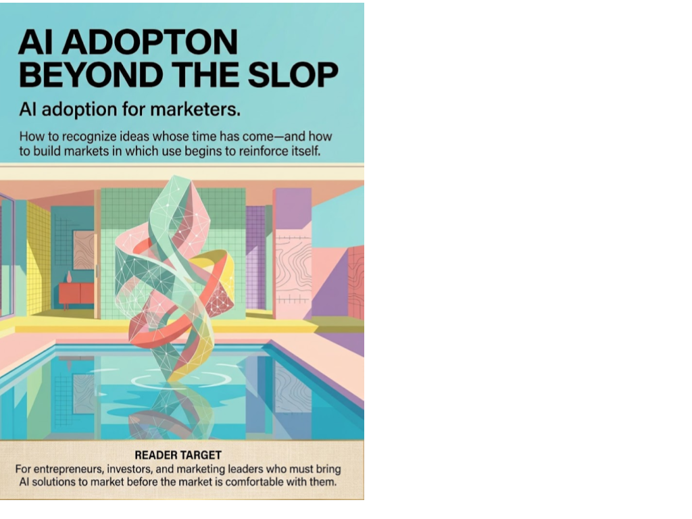

Business & Startups · Axiologic Research Editions
AI Adoption Beyond the Slop
Marketing and the Social Physics of AI Adoption
How to recognize ideas whose time has come, and build markets in which use begins to reinforce itself.
Beyond the visible failures
Generative AI reaches the public wrapped in a genuine contradiction: the capability frontier can advance while the most visible output looks worse. Cheap, low-effort material is abundant; the errors are memorable and easy to circulate; useful work is often private, embedded in an existing practice and difficult to observe. AI Adoption Beyond the Slop starts from this contradiction without trying to deny it. Slop is a real problem, but it is not a market theory.
The book asks what happens after a tool moves beyond spectacle. Its answer is not a single adoption curve. Different people face different task pressures, risks, permissions and opportunities. A capability becomes a market when it repeatedly solves a painful job, can enter a legitimate workflow and accumulates enough surrounding practice that the next user has less to invent alone.
Where the market begins
Who adopts first? Usually not an average future customer. The book calls attention to abnormal users: people with unusually acute need, unusual autonomy, an arbitrage opportunity or room to experiment. They can accept friction that a broader market will not, and their working cases reveal where private utility is already real.
Why is utility not enough? A useful tool may still lack permission. The relevant threshold includes evidence, control, policy, professional legitimacy and the ability to explain risk. Leaders do not merely purchase capability; they decide when a practice may enter an institution’s risk regime.
What turns use into adoption? The book follows the loops among cases, skills, complementary services, norms and budgets. Good positioning names the task and the risk it reduces, rather than promising a generic revolution. The aim is a market that can increasingly teach itself.
The first user of a technology is not a miniature of its future market.
Growth without degrading the work
The final argument concerns formation. If AI removes the junior tasks through which people once built judgment, adoption can create a hidden expertise debt. The practical question is not whether every old task should survive. It is whether organizations can identify what a person must still learn to verify, direct and improve an increasingly automated workflow. This makes the book useful to founders, investors and marketing leaders who want adoption to create durable capability rather than merely impressive usage numbers.